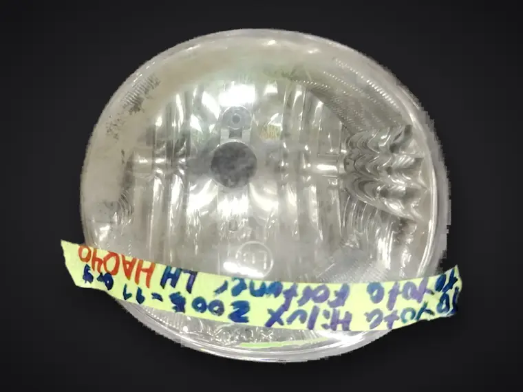

HA043Halógenas / Faros antiniebla Toyota Hilux / Fortuner 2005-11
- Pieza
- Halógenas / Faros antiniebla
- Marca
- Toyota
- Modelo
- Hilux / Fortuner
- Años
- 2005-11
- Lado
- Lado izquierdo
- Condición
- Original
- Código
- #HA043
Esta pieza ya se vendió. Escríbenos y te avisamos cuando llegue otra igual.
Consultar precio por WhatsApp Ver en el catálogoMás piezas para Toyota FortunerGarantía de 3 días después de la entrega · Efectivo, Yappy o ACH
Retiro en Calidonia, ciudad de Panamá · Lunes a sábado, 8:00 a. m. a 5:00 p. m. · Llegar con Waze